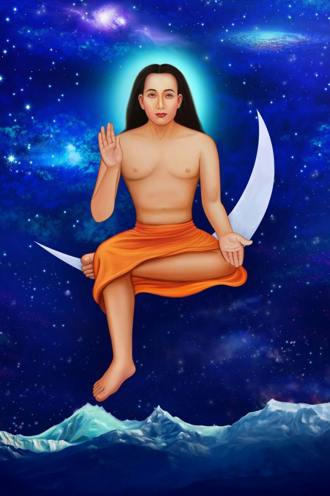

About Us
Babaji's Story
Shri Shri Maha Avatar Babaji is revered as the Param Siddha — the supreme perfected being — who has attained Param Mukta, the state of being supremely free from death. Without limitation of time or space, he moves as he wills, with or without physical form, and is regarded as omniscient, omnipresent and omnipotent.
Across generations, Babaji has been described as dwelling in the remote reaches of the Himalayas, appearing to guide sincere seekers before withdrawing again into seclusion. It is this enduring presence in the mountains — unbound by age or circumstance — that has made the Himalayas central to his story, and to the spiritual imagination of Sanatan Dharma.
MaBap Foundation exists to carry that teaching into the world: that service to humanity is itself a form of devotion. Shri Siddha Guru Pith, the Foundation's flagship project on the banks of the Varoli River, is envisioned as a living centre of this energy — a place where Babaji's presence and teachings can be experienced, and his call to seva answered, by all who visit.

Leadership
Guided by Trust and Experience
Dr. CA Mayur B. Nayak
Chairman
B.Com., FCA, PhD
Mr. Hitesh Mehta
Director
B.Com.
Our Volunteers
The Hands Behind Our Seva
MaBap Foundation's work is powered by dedicated volunteers who give their time across our programs.
Volunteer 1
Toy Library Volunteer
Volunteer 2
Digital Classroom Volunteer
Volunteer 3
Medical Camp Volunteer
Volunteer 4
Community Outreach Volunteer
Volunteer 5
Event Coordinator
Volunteer 6
Yoga & Discourse Volunteer
Volunteer 7
Toy Library Volunteer
Volunteer 8
Digital Classroom Volunteer
Volunteer 9
Medical Camp Volunteer
Volunteer 10
Community Outreach Volunteer
Volunteer 11
Event Coordinator
Volunteer 12
Yoga & Discourse Volunteer